Vitrine plays video and stills across one or more projectors, blends their overlapping edges into one image, warps and masks each projector to fit the surface, and runs cues on its own or when a sensor, a lighting desk or a phone tells it to.
The screenshots come from a demo show called Gallery demo: two projectors side by side on a 3600 x 1080 canvas. That demo uses ports 7100 to 7102 and 8180 so it could run next to a live copy. This guide uses the default ports throughout: OSC 7000, UDP 7001, TCP 7002 and HTTP 8080.
01Getting started
From an empty show to an image on the wall.
Vitrine is one window for you (the control window) plus one window per projector (the outputs). The control window has nine pages along the top. You build a show on Outputs, Mapping, Content and Cues, and you run it from the Show page.
Connect the projectorsPlug them in and set the Mac to extend the desktop, not mirror it. Vitrine lists every display it can see at the bottom of the Outputs page.
Add one output per projectorOn Outputs, add an output, pick the display, and set which part of the canvas it shows. If the projectors overlap, give their regions the same overlap and press Auto blend overlaps.
Line up the imageTurn on the Canvas grid test pattern (Show page), then on Mapping drag the warp points until the grid lines meet on the wall. Tune the edge blends with Blend check.
Add mediaOn Content, add video or image files and put them on a layer.
Make cuesOn Cues, each cue says what every layer plays, with a fade. Mark one as the cue that plays when Vitrine starts.
Hand overSet an edit PIN in Settings so visitors and staff can only use the Show page, and turn on Start Vitrine at login for an unattended machine.
The show saves itself a few seconds after you stop editing, and every save keeps a timestamped backup. CmdS saves at once.
02Show page
Run the show, see what is playing, check health.
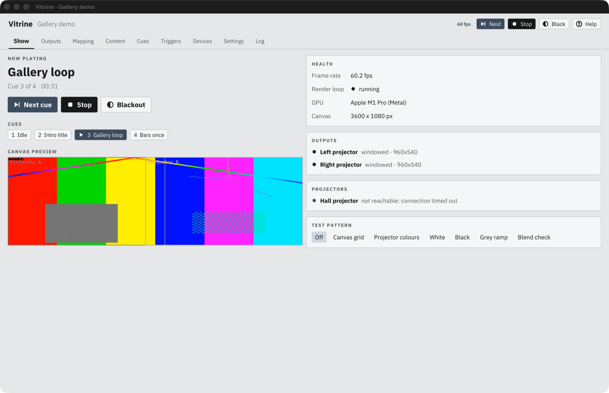
12345678
Next, Stop, Black sit in the top bar on every page. Next plays the next cue in the list, Stop stops playback, Black fades every projector to black and pressing it again restores the picture. Help opens this guide.
Pages. With an edit PIN set, only Show and Log open until someone unlocks editing.
Now playing: the current cue, its number in the list (Cue 2 of 3) and how long it has run.
Transport: Next cue, Stop and Blackout, larger, for the operator. While blacked out the button reads Restore and the line above ends in BLACKED OUT.
Cue chips: click a cue to go to it straight away.
Canvas preview: the whole canvas with each projector's region drawn on it, so you can see the show without looking at the wall.
Health: frame rate, whether the render loop is running, the GPU and the canvas size. Below it, the Outputs card shows each output with a status dot, Needs attention lists any warning, and the Projectors card shows PJLink status. A problem here also goes to the log.
Test pattern: shows a pattern on every projector, over the show. Pick Off when you are done. See Test patterns.
03Outputs
The canvas, and which projector shows which part of it.
Everything is laid out on one canvas, measured in pixels. Two 1920 x 1080 projectors side by side with a 240 px overlap make a 3600 x 1080 canvas. Each output is a window on one display, and each output has one or more slices. A slice takes a rectangle of the canvas and is what you warp, blend and mask on the Mapping page.
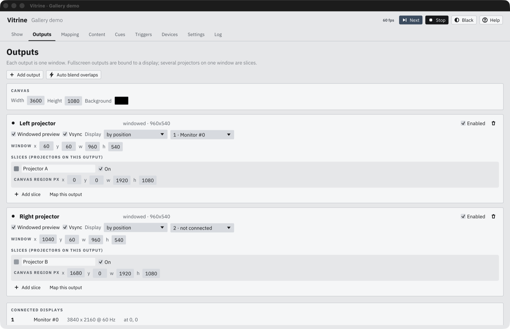
12345678
Add output adds a projector. Auto blend overlaps looks at where slice regions overlap on the canvas and sets each matching edge blend to that width. In the demo the left slice covers x 0 to 1920 and the right one x 1680 to 3600, so both get a 240 px blend.
Canvas size in pixels. Content layers and slice regions use these coordinates.
Display. The output goes fullscreen on the chosen display. Tick Windowed preview to get a normal window instead, which is handy while building a show on a laptop. Displays can be matched by position (first, second, third display) or by name, which survives a cable being moved to another port.
Window position and size, used when Windowed preview is ticked.
10-bit asks the display for 10 bits per channel, which smooths long, dark blend ramps. Tick it only when the cable and projector carry 10-bit; otherwise the system drops back to 8-bit and the Log says so.
Slice canvas region: x, y, width and height of the canvas this slice shows. Add slice splits one output into several slices, for a wide desktop that spans several projectors in a single window.
Map this output jumps to the Mapping page with this output selected.
Enabled switch and delete. A disabled output closes its window.
Connected displays: what the computer reports right now, with resolution.
When several computers run one show (see Several computers), each output card also has a Machine field: the name of the computer that drives this projector. Leave it empty for the leader. Each computer opens only its own outputs and lists the others as runs on that machine.
An output window ignores CmdW and the close button, so a stray keypress cannot black out a projector. To close it, untick Enabled. If a display disappears (unplugged, asleep), Vitrine keeps the output and puts it back when the display returns.
04Mapping
Warp, blend, black lift, masks and colour for each projector.
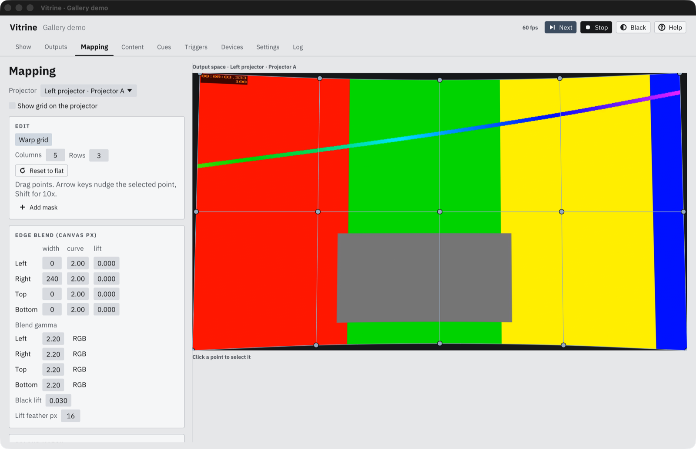
12345678
Projector: which slice you are editing.
Show grid draws the canvas grid on that projector while you work.
Columns and rows of the warp grid, from 2 to 33. Changing them resamples the current shape, so you do not lose your work. Reset to flat starts over.
Edit list: choose the warp grid or one of the masks. Add mask makes a new one.
Edge blend width in pixels for each side, with curve and lift, and below them the blend gamma (one value, or R, G and B separately). Here the right edge fades over 240 px.
Black lift raises the black level outside the overlaps, with a feather, so the black of a single projector matches the doubled black where two overlap.
Colour match: brightness, contrast, gain and gamma, to make two projectors look the same.
Warp canvas. Drag a point to move it.
Warp
The warp is a smooth grid (Catmull-Rom) over the slice, so the image bends between points instead of folding at them. Start with a 3 x 3 or 5 x 3 grid and add rows or columns only where the surface needs them.
Drag a point to move it. Hold Shift while dragging to move at a tenth of the speed.
Click a point to select it, then use the arrow keys: each press moves 0.1% of the slice, or 1% with Shift. Esc deselects.
Points can go up to half a slice past each edge, for surfaces smaller than the throw.
Edge blend
Where two projectors overlap, each one fades out across the overlap so the sum looks like one image. Set the width on the matching sides of both projectors (left projector's right edge, right projector's left edge), or let Auto blend overlaps on the Outputs page do it. Curve shapes the ramp and gamma corrects for the projector's light response: if the overlap looks brighter than the rest, raise the gamma a little; if it looks darker, lower it. If the overlap shows a colour tint (often red or blue), switch that edge to RGB and set the gamma of each channel apart.
Measured response. For the most even overlap, measure the projector instead of guessing a gamma. Show the Steps test pattern, read each grey step with a light meter, and type the readings into a spreadsheet: one column with the signal level (0 to 255, or 0 to 1) and one with the reading, or three readings for red, green and blue. Save it as CSV or text and pick it with Import… in the blend card. Lines starting with # and headings are ignored, and the highest signal counts as full white. Vitrine then fades the overlap in real light, so the blend gamma fields grey out. Clear goes back to gamma.
Black lift
Projectors cannot show true black, so the overlap of two is greyer than the area lit by one. Black lift adds a small grey to the areas outside the overlaps to match. Show the Black test pattern in a dark room and raise the value until the overlap band disappears. Feather softens the edge of the lifted area.
With four projectors in a 2x2 grid there are three levels of black: one projector in the middles, two along each overlap band, four in the corner. Black lift covers the middles. The lift column for each edge raises its overlap band, but not the corner where two bands cross, so set it on both projectors that share the band until the bands match the corner.
Masks
A mask hides a part of the projector's image, for a door, a pillar or a frame edge. A new mask is a square in the middle of the slice. Tick Invert to keep only the inside and hide everything else. Feather (0 to 0.5) softens the edge.
Select the mask in the Edit list, then drag its points on the canvas.
Double-click on the outline to add a point. Right-click a point to remove it (a mask keeps at least three).
On turns a mask off without deleting it.
Put media inside a mask
Select a mask and pick a file under Fill with. The media then shows only inside the shape instead of hiding it. It is stretched over the shape's bounding box, loops, and is silent. Pick Nothing to go back to hiding the area. Feather softens the edge of the shape.
3D mesh
For a sculpture, a model or a set piece, project onto its 3D shape instead of bending the flat warp grid. Export the object from your 3D program as an OBJ file with UVs. The UVs decide where the slice's region of the canvas lands on the surface: UV 0,0 is the region's bottom left and 1,1 its top right. In the 3D mesh card, pick the file with Load OBJ…. The Edit list then shows Pins in place of the warp grid. Remove goes back to the flat grid.
Pose. Type where the projector lens sits (Lens at), the point it aims at (Looks at), its vertical Field of view and any Lens shift, in the model's units with y up. Frame mesh aims at the whole model from the front as a starting point.
Pins. Measuring a projector exactly is hard, so pin it instead. Double-click near a vertex of the model to pin it, then drag the pin (or nudge it with the arrow keys) to where that corner really falls on the object. A thin line joins each vertex to its pin. With six or more pins, spread in depth and not all on one face, Vitrine solves the projector and the pose fields grey out. The card shows the remaining error. Right-click removes a pin. Clear pins goes back to the typed pose.
Hide back faces keeps the far side of the model from painting through. Turn it off for open shapes seen from both sides.
After editing the file, press Reload. Pins keep their vertex numbers, so a model with new vertex order needs new pins.
Edge blends, black lift, masks and colour match still apply on top, in the projector's own image.
Colour match
Use the White and Grey ramp patterns. Bring the brighter projector down with gain rather than pushing the dimmer one up, then match the mid-greys with gamma.
Camera alignment
A camera can do the first rough warp and blend for you. Vitrine shows black and white stripe patterns (Gray code) on each projector in turn, finds every projector pixel in the camera picture, and from that works out where each projector lands on the wall. It is a starting point: fine-tune the warp points by hand afterwards.
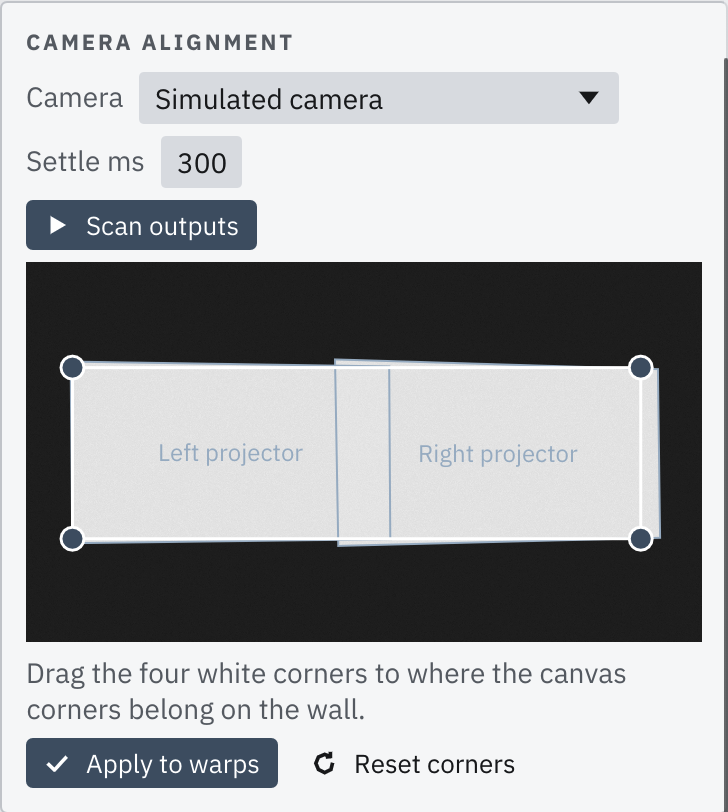
Open every output window on its projector. Outputs that are closed, run on another computer in a cluster, or use a 3D mesh are skipped.
Set up a webcam or capture camera so it sees the whole wall. Lock its exposure, focus and white balance (in the camera's own app) and keep the room dark. Automatic exposure fights the patterns and gives a noisy result.
In the Camera alignment card at the bottom of the Mapping page, pick the camera. Settle ms is the wait between a pattern and the photo of it. Raise it if the camera lags (USB webcams often need 300 to 600 ms).
Press Scan outputs. Each projector shows about 40 patterns, so two projectors take about half a minute. Cancel stops the scan and puts the show back.
The camera view then shows each projector's outline and four corner handles for the canvas. Drag the handles to where the corners of the picture should be on the wall. Reset corners puts them back.
Press Apply to warps. Each projector gets a warp grid of at least 9 x 9, a region of the canvas, and blend widths on the edges where it overlaps a neighbour. The Log lists what was set. CmdZ undoes it.
Which camera to use
Any ordinary camera that macOS lists as a video device works. No special camera is needed, and it does not have to be expensive.
Camera
Notes
USB webcam
The easiest choice. Plug it in and pick it in the card. A 1080p webcam is plenty. Raise Settle ms if the picture lags.
Phone as a webcam
An iPhone can act as a Mac webcam (Continuity Camera: same Apple account, Wi-Fi and Bluetooth on, phone near the Mac, or on a USB cable). If it shows in the camera list, it works like any webcam. Phone cameras apply strong automatic exposure and processing, so lock exposure and focus first. If the phone does not appear in the list, use a USB webcam instead. Not every setup lists it; this has not been tested on every macOS version.
Mirrorless or DSLR
Gives the best result, especially for a wide wall or a dome. Connect it through an HDMI capture card (USB 3, UVC type), with the camera's clean HDMI output on and its screen info and autofocus off. Some cameras also have a webcam mode over USB.
IP, NDI or phone app streams
Not used for alignment. The card lists cameras and capture cards connected to this Mac, plus the Simulated camera.
Camera and lens
Resolution. 1280 x 720 is enough. Vitrine reduces every camera frame to at most 1280 pixels wide before it measures anything, so a 4K camera gives no extra accuracy. What matters is that the camera sees each projector pixel as a clear stripe: the finer the pattern, the more the picture needs to be sharp, not large.
Lens. Wide enough to show the whole lit wall with a little dark margin around it, and no wider. A webcam with a field of view of 70 to 90 degrees is typical. Very wide or fisheye lenses bend straight lines, and Vitrine does not correct lens distortion: the warp will follow the bend and a straight edge on the wall will come out curved. If you must use a wide lens, keep the projection in the centre of the picture, where distortion is lowest.
Frame rate. Any. 30 fps is fine because each pattern is held still until the photo is taken.
Sensor. Low-light and good dynamic range help most, because the dark stripe has to be dark and the light stripe bright. Cheap cameras that compress heavily blur the finest stripes.
Setting up the camera
Connect it before you open Vitrine, and allow camera access when macOS asks (System Settings, Privacy & Security, Camera). If it is not in the list, unplug and plug it in again, then reopen the card.
Place it on a tripod or a fixed mount, as close to the audience's view of the wall as you can, and square to the surface. It can sit anywhere that sees every projector's picture, but the further off to the side, the more the picture is stretched. Do not touch or move it until the scan is done and applied.
Frame it so that the whole lit area, all projectors together, fills most of the picture with a margin. Check in the camera view in the card. All four corners of every projector must be visible.
Focus on the wall and lock it. Turn autofocus off. A soft picture loses the fine stripes.
Lock exposure and white balance. Point the camera at the wall with the Show page on Blend check or a white pattern. Set exposure so the lit wall is bright but nothing is clipped to pure white. Then lock exposure and white balance in the camera's own app or its menu. Vitrine has no camera controls of its own.
Darken the room. Switch off house lights and close blinds. The lit stripes must be clearly brighter than the dark ones. If a part of a projector's picture is not detected, that area is dropped from the result, and the log says which output the camera did not see.
Mind the surface. Gloss, mirrors, windows and shiny floors show reflections that look like extra stripes. A matte, evenly white or grey wall gives the cleanest scan. On a dark surface, raise the projector's brightness first.
Turn off picture effects that change the picture while it is on: face tracking, centre stage, background blur, HDR, night mode, beauty filters. Each one alters the image between patterns.
Keep it steady. Do not bump the table or let anyone walk in front of the beam during the scan, which takes about half a minute.
If the scan stops with a message, these are the common ones: did not draw the pattern (is its window open?) means that output window is closed. the camera did not see this projector means too little of that picture was bright enough in the camera view: check framing, exposure and room light. the camera changed resolution during the scan means the camera switched mode, often because another program grabbed it; close other camera apps. the camera sent no frames means access was refused or another program holds the camera.
The blend widths come from the overlap of the projectors' bounding boxes, so with strong keystone check them on the Blend check test pattern. Simulated camera runs the whole process without hardware, to try it out.
05Test patterns
Show page, Test pattern card. They go on every projector, over the show.
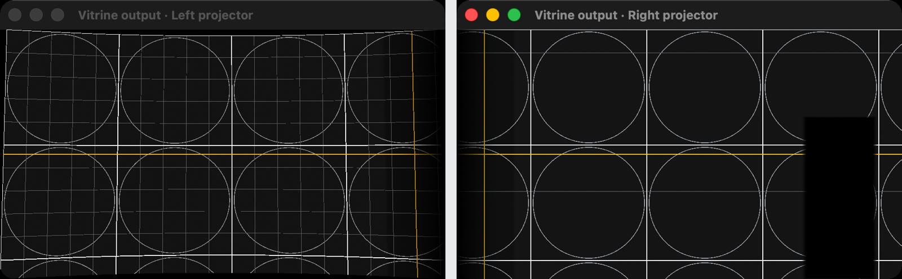
Canvas grid on the two demo outputs. The grid is drawn on the canvas, so where the projectors overlap the same lines must land on top of each other.
Pattern
Use it to
Canvas grid
Line up warps. Thin lines every 100 px, thick every 500 px, a circle in each 500 px cell, and the canvas centre lines in yellow.
Projector colours
See which projector is which: each slice gets its own solid colour.
White
Check brightness and colour match.
Black
Set black lift in a dark room.
Grey ramp
11 grey steps from black to white, for gamma and colour match.
Blend check
Plain white with the edge blends and masks applied. A good blend shows an even white across the overlap.
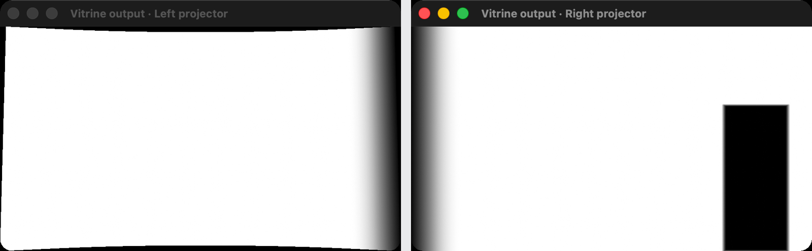
Blend check. Each output fades to black across the 240 px overlap, and the right output also shows its mask as a black rectangle. On the wall the two ramps add up to even white.
Colour match, black lift, blends and masks all apply to the patterns too, so what you see is what the show will look like.
06Content
Media files, and the layers they play on.
The Layer placement card shows the canvas with every layer as a box. Click a layer to pick it, drag a corner handle to reshape it, drag inside it to move it. Corners snap to the canvas edges and centre; hold Alt to move freely. The numeric corner fields below stay available. Small ? buttons beside section titles open the matching part of this guide.
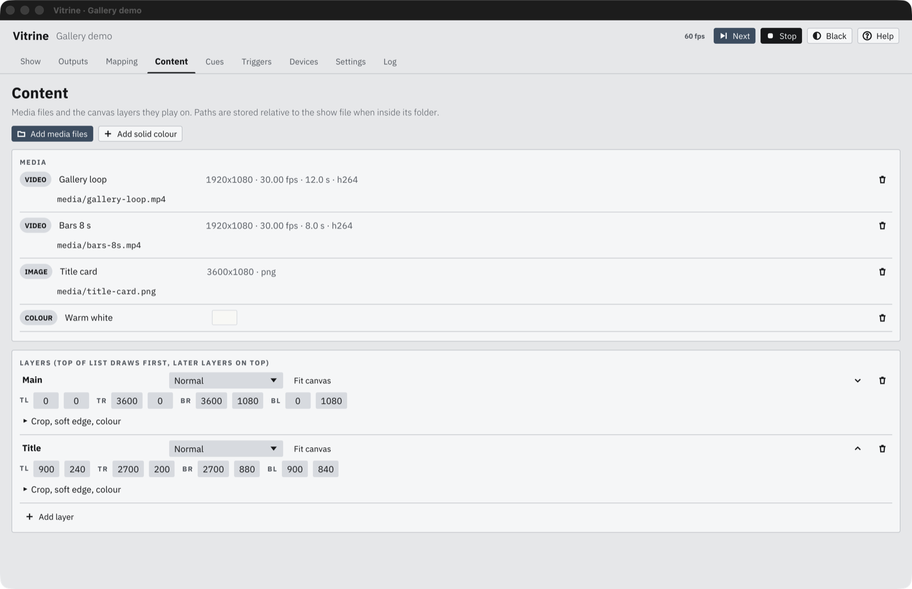
123456
Add media files (video or images), Add image sequence, Add capture input (see Live input below) or Add solid colour. Files inside the show's folder are stored with a relative path, so you can copy the whole folder to another machine.
An image sequence is a folder of numbered frames, for example shot_00001.png, shot_00002.png and on. PNG, JPEG, TIFF, BMP, WebP, DPX and EXR work. Pick the folder, then set the frame rate in the fps box next to the name (25 by default). It shows as FRAMES and plays, loops and seeks like a video. Numbering may start at any number but must have no gaps: playback ends at the first missing frame. Sequences have no sound.
Media info: size, frame rate, length and codec, read from the file. If a file cannot be read, it says so here and in the log.
Blend mode of the layer: Normal, Add or Multiply.
Corners TL, TR, BR, BL in canvas pixels. Fit canvas fills the whole canvas. Moving the corners places the layer anywhere, even as a skewed shape, like the Title layer here.
Crop, soft edge, colour (click to open, opens by itself once something is set). Crop % cuts the source from the left, top, right and bottom, and what is left fills the corners. Soft edge px fades the layer's edges over that many canvas pixels, good for a picture floating on a wall. Colour: brightness, contrast and saturation (0 is black and white), then Tint, a multiplier per channel where 1 leaves it unchanged. Reset look puts all of these back.
Layer order. The top of the list draws first, later layers draw on top. Use the up and down arrows to move a layer.
Add layer.
10-bit, ProRes and HDR video. 10-bit HEVC, ProRes 422 and ProRes 4444 keep their full bit depth on the way to the canvas, and ProRes 4444 alpha shows the layers underneath. HDR video (PQ or HLG, BT.2020) is converted for SDR projectors: reference white (203 nits) shows as near-full white and highlights up to 1000 nits roll off smoothly instead of clipping. For the smoothest ramps, also tick 10-bit on the output.
Sound (under each layer): the output device for that layer's video sound, and its volume from 0 to 2 (1 is the file as recorded). Each layer can go to a different device, for example the hall speakers and a headphone amplifier on a USB interface. Sound follows the video's clock, including seeks and loops, and fades with the layer's opacity and with Black. It plays only at normal speed; paused or sped-up video is silent. A file with no audio track plays silently. If the chosen device is unplugged, sound moves to the system default and the Health card says so.
Live input: cameras, capture cards, NDI and streams
Add capture input adds a LIVE item that shows a source as it arrives. Pick it from the Device menu, or type the source into the path:
Cameras and capture cards connected to the Mac. The first time, macOS asks for camera access. The fps box asks the device for a rate; auto tries 30, 25, 60, 50, 29.97, 59.94 and 24.
NDI® sources on the local network, listed in the Device menu under the cameras (they take a second or two to appear). They are stored as ndi: followed by the source name, for example ndi:STUDIO-PC (OBS). macOS asks once for local network access. The NDI runtime is built into Vitrine, so nothing else needs to be installed. Free NDI tools for sending and testing are at ndi.video/tools.
Network streams: srt://, rtsp:// and udp:// addresses.
Live input always shows the newest frame and never builds up delay. If the source drops out, the layer holds its last frame, the Health card says so, and Vitrine reconnects every 2 seconds. Live input has no sound, and NDI alpha is not used.
NDI® is a registered trademark of Vizrt NDI AB. See ndi.video.
A layer is a place on the canvas. What plays on it, and at what opacity, is set by the cues. Video is decoded on the graphics hardware where possible, with a software fallback. H.264 and HEVC in an MP4 or MOV are the safe choices; for a gapless loop, export the file so its last frame leads into its first.
07Cues
A cue sets what every layer plays, and what happens next.
In the list, click a colour swatch in the editor to label a cue (six cool colours, shown as a bar beside its number). Ctrl/Cmd-click adds cues to a group and Shift-click selects a range, then pick one colour or delete the whole group. The Go to box takes a cue number or part of a name: press Enter to select and play it.
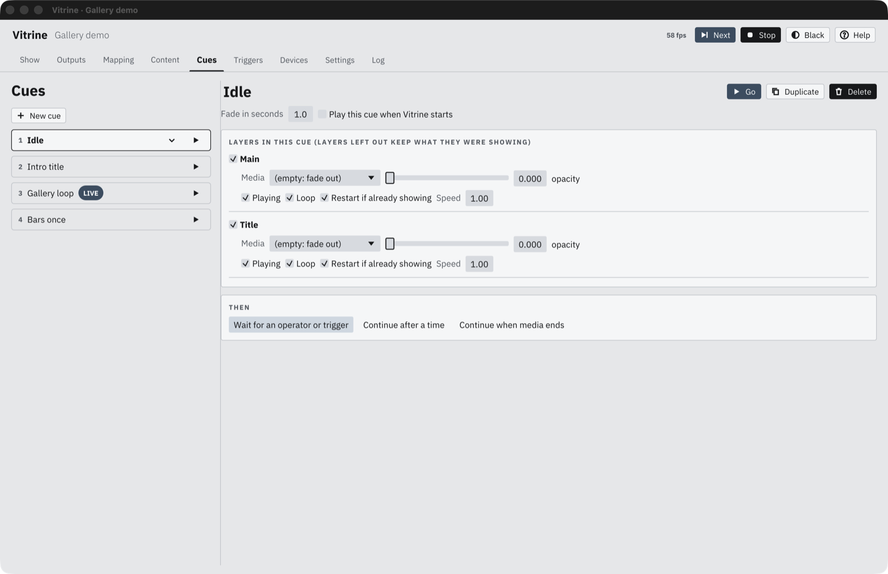
1234567
Cue list. The playing cue has a LIVE tag. Next follows the list order; move the selected cue with its up and down arrows. A cue's Note shows beside it in the list, for the operator only. With more than 8 cues, the Show page switches to a scrollable list with a search box and a NEXT tag. Vitrine has no timeline on purpose: produce the content in an editing program, then use cues, Continue when media ends and triggers to sequence it. Videos in the next cue (and in a follow target) are opened and decoded ahead of time, so the cut to them is instant; the log says "first frame in 0 ms, preloaded".
Play a cue straight from the list.
Go, Duplicate and Delete for the selected cue.
Fade time, and Play this cue when Vitrine starts. Only one cue can be the startup cue.
Per layer: tick a layer to include it in the cue, then pick its media and opacity. (empty: fade out) fades the layer out. Layers left out keep what they were showing.
Playing (untick to pause), Loop, Restart if already showing (start from the top even if this media was already on the layer) and Speed.
THEN: what happens when this cue is done.
Follow (THEN)
Choice
What it does
Wait for an operator or trigger
The cue holds until someone presses Next or Go, or a trigger fires.
Continue after a time
Goes to the chosen cue after a set time.
Continue when media ends
Goes to the chosen cue when the media on the chosen layer finishes. Use it for an intro film that hands over to a loop.
Cues can be called by their name, their number in the list (counting from 1) or their internal id, from OSC, HTTP, the remote and triggers. Names are not case sensitive.
08Triggers
When something happens, if conditions hold, do these actions.
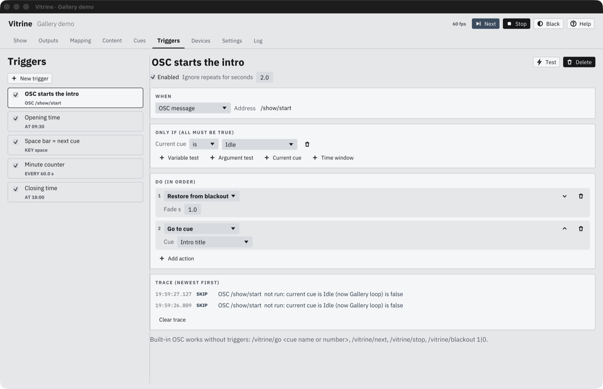
12345678
Trigger list with a summary of each event.
Enabled and Ignore repeats for seconds: after firing, the trigger ignores the same event for that long. Use it for sensors that chatter.
WHEN: the event.
ONLY IF: conditions. All of them must be true.
DO: the actions, run top to bottom.
Add action.
Test (top right) runs the actions now without waiting for the event. Conditions are checked and reported but do not block a test.
The built-in OSC addresses work without any trigger. See Remote and HTTP API.
Trace, below the actions, lists what this trigger did, newest first. Each line is marked OK or SKIP: the event that fired it, every action step with its result (for example "go to cue Intro title" or "PJLink: no projector chosen"), and why an event was skipped ("current cue is Idle (now Gallery loop) is false", or a repeat inside the ignore window). Steps after a wait keep their numbers. The last 400 lines across all triggers are kept until you quit; Clear trace empties this trigger's lines.
Events (WHEN)
Event
Fires when
OSC message
An OSC message arrives on port 7000 at this address. * matches anything within one part of the path, so /room/*/enter matches /room/2/enter.
UDP text
A UDP packet on port 7001 matches the text.
TCP text
A line on a TCP connection to port 7002 matches the text.
HTTP call
Someone calls /api/trigger/<name>.
Key press
A key is pressed while a Vitrine window has focus (default space). Letters use their lower-case name; other keys use names like enter or arrowright.
Time of day
The clock reaches HH:MM on the chosen days. No days chosen means every day.
Repeat every
A fixed interval passes.
App started
Vitrine starts.
Cue started
A given cue starts.
Media ended
Media on a given layer reaches its end.
Variable changed
A variable gets a new value.
Art-Net channel
An Art-Net channel rises through a threshold (listed as ART-NET universe.channel > threshold). Turn on Art-Net input in Settings first.
Serial line
A serial device (Devices page) sends a line that matches the text. Matching works as for UDP text; leave the device on "any" to listen to all of them.
MIDI input
A note, controller or program change arrives on any MIDI input. Channel 0 means any channel. Notes and controllers fire when the value rises to Reaches or above, once, and fire again only after the value drops back below it.
Custom event
Another trigger fires it with Fire custom event.
Matching UDP and TCP text
The text must match the whole message, after the line ending is trimmed. To match a pattern instead, write a regular expression between slashes: /^zone \d+$/i matches zone 3 and ZONE 12 (the i ignores case). The message is split into words to give arguments: arg0 is the first word, arg1 the second. OSC arguments are numbered the same way.
Conditions (ONLY IF)
Condition
True when
Variable test
A variable compares to a value with ==!=><>=<= or contains. Numbers compare as numbers.
Argument test
An argument of the incoming message compares to a value, with the same operators.
Current cue
A given cue is (or is not) playing.
Time window
The time of day is between two times.
Actions (DO)
Action
Does
Go to cue / Next cue / Stop
The same as the transport buttons.
Blackout / Restore from blackout
Fades all outputs to or from black over the given time.
Change a layer
Sets a layer's opacity and play or pause, with a fade, without changing cue.
Set variable
Sets a value, adds to it, or toggles it.
Fire custom event
Starts any trigger listening for that custom event.
Wait
Pauses before the next action, in milliseconds.
Send OSC / UDP / TCP
Sends a message to another device: host, port, and the address or text.
Send Art-Net
Sets one DMX channel on a host and universe.
Send serial
Writes text to a serial device. \n and \r become line endings, so ON\n sends ON and a newline.
Send MIDI
Sends a note, controller or program change (channel 1 to 16) to every MIDI output whose name contains the port text, or to all of them when it is empty.
Projector command
Power on, power off, shutter close (mute), shutter open, or switch input, over PJLink.
Test pattern
Shows a test pattern, or turns it off.
Write to log
Adds a line to the log.
Script
A few lines of JavaScript for logic the rows above can't express. See below.
Outgoing text can include values: {arg0}, {arg1} for the incoming arguments, {var:visitors} for a variable, and {cue} for the current cue.
Scripts
A Script action runs JavaScript when the trigger fires. Use it for arithmetic, branching on arguments or picking a cue by number. A script can't open files, reach the network or set timers. It is stopped after 100 ms or 16 MB of memory, and the error shows in the trace and the log with its line number. Scripts run on their own thread, one at a time, so even a slow script never holds up the projectors; its actions start on the next frame after it finishes (usually within a few milliseconds).
A script reads args[0], args[1] and on (the incoming arguments, as text), vars.visitors or getVar('visitors'), and cue (the current cue name). These calls act on the show:
Call
Does
go('Loop'), next(), stop()
Cue playback. Cues are found by name.
blackout(ms), unblackout(ms)
Fade to black or back, 1000 ms if left out.
layer('Main', 0.5, ms)
Fades a layer's opacity.
setVar('name', value), emit('event')
Sets a variable or fires a custom event.
wait(ms)
Delays the calls after it, and the trigger's remaining actions.
The calls run in order once the script ends, and each one appears in the trace. For example, this plays the Loop cue for every tenth visitor:
const n = Number(vars.visitors || 0) + 1;
setVar('visitors', n);
if (n % 10 === 0) go('Loop');
09Trigger examples
Three common set-ups, with a command to test each one from a terminal.
A lighting desk starts the show over OSC
WHENOSC message /show/startDOGo to cue Gallery loop
Test it from another computer (replace show-mac.local with the show machine's name or IP). oscsend comes with liblo (brew install liblo).
oscsend show-mac.local 7000 /show/start
# The built-in addresses need no trigger at all:
oscsend show-mac.local 7000 /vitrine/go s "Gallery loop"
oscsend show-mac.local 7000 /vitrine/go i 2
oscsend show-mac.local 7000 /vitrine/blackout i 1
Add the variable visitors in Settings first, start value 0, with Remember ticked so the count survives a restart. The sensor sends zone 3; {arg1} is the 3. Test it:
echo "zone 3" | nc -u -w1 show-mac.local 7001
A second trigger could then use Variable changed with the condition visitors >= 100 to play a special cue.
Closing time from a building system over HTTP
WHENHTTP call closingDOBlackout fade 3000 msWait 5000 msProjector command Hall projector Power off
curl -X POST "http://show-mac.local:8080/api/trigger/closing?token=YOUR_TOKEN"
# TCP works too. A trigger with TCP text "closing" answers to:
printf 'closing\n' | nc show-mac.local 7002
The same thing on a timer: use Time of day 18:00, days Monday to Saturday.
10Devices
Projectors over PJLink, serial devices, MIDI, audio outputs, control ports and the phone remote.
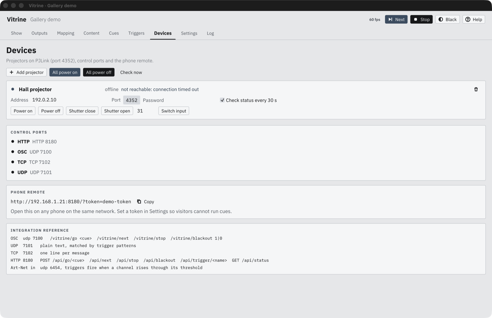
123456
Add projector, All power on, All power off, Check now.
Status: power state, lamp hours if the projector reports them, any fault, or why it cannot be reached. The demo projector's address is made up, so it shows offline.
Commands for one projector. The number next to Switch input is the PJLink input code (31 is usually the first HDMI input; see the projector's manual).
Control ports and whether each one is listening.
Phone remote address with the token, ready to copy.
Integration reference: the commands other systems can send.
PJLink is the network control standard on most installation projectors (Epson, Panasonic, NEC, Sony, Christie and others). Turn it on in the projector's network menu, give the projector a fixed IP, and enter the password if it has one. Vitrine uses port 4352 and checks status every 30 seconds if Check status every 30 s is ticked.
Serial devices
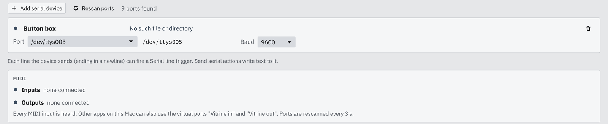
Use serial for Arduino buttons, PIR motion sensors and relay boards on USB. Add serial device picks the first free port; choose another from the list or type its path, and set the baud rate to match the device's sketch (9600 is the Arduino default). Rescan ports looks again after you plug something in. The dot turns grey with the reason when the port is missing; Vitrine keeps trying to reopen it and raises a Health alert while it is down.
A minimal Arduino button box sends one line per press, for example Serial.println("btn1");. A trigger with the Serial line event and text btn1 then runs. To drive a relay, have the sketch read lines and add a Send serial action with ON\n.
MIDI
Every MIDI input on the machine is heard, and the card lists what is connected. Vitrine also makes two virtual ports, "Vitrine in" and "Vitrine out", so other software on this Mac (a lighting desk app, Ableton, QLab) can talk to it without cables. Ports are rescanned every 3 seconds, so a controller plugged in during a show starts working on its own.
Audio outputs
Lists every sound output on the machine with its channel count and sample rate, which one is the system default, and which are playing now. Pick the device per layer on the Content page. Stereo and mono files play on the first two channels of a device; a mono device gets both sides mixed. A surround file (5.1, 7.1 and so on) keeps every channel in file order when the device has at least that many outputs, and is mixed down to stereo when it does not. Sound stays at the file's resolution: a 24-bit, 96 kHz file reaches the device at 96 kHz with no conversion, if the device supports that rate. Vitrine sets the device to the highest rate among the clips routed to it, and other apps using the same device follow that rate. When a higher-rate clip starts, the device reopens once, which can cause a short gap. Devices are rescanned every 3 seconds, and a device that comes back is used again on its own. On a Mac, an Aggregate or Multi-Output Device made in Audio MIDI Setup shows here too, so give each one a distinct name.
11Settings
Show file, ports, access, start at login, variables, alerts.
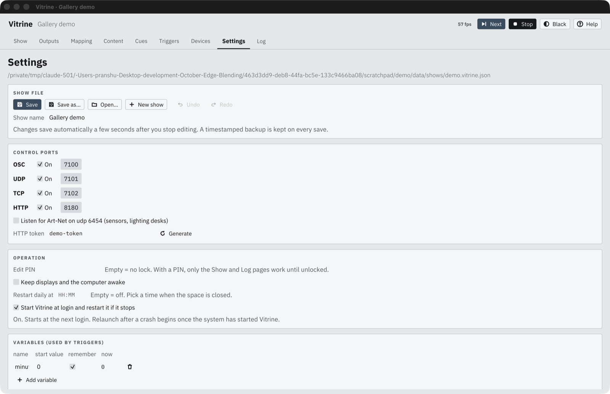
123456
Show file: Save, Save as, Open, New show, Undo and Redo. The path of the open show is above the card.
Control ports. Each one can be turned off or moved. Art-Net input (port 6454) is off until you tick it.
HTTP token. With a token set, the remote and every /api call need it. Generate makes a new random one; anything already using the old one stops working.
Edit PIN. Empty means no lock. With a PIN, only the Show and Log pages work until someone enters it. The lock button in the top bar locks again.
Keep displays and the computer awake, Restart daily at, and Start Vitrine at login and restart it if it stops (macOS). See Recovery.
Variables for triggers: a name, a start value, and remember to keep the value across restarts. The now column shows the live value.
Saving, backups and where files live
Vitrine saves a few seconds after your last change, so there is no unsaved state to lose; CmdS saves at once. Every save is written whole or not at all, and a copy goes into a backups folder next to the show file. The newest 30 copies are kept. If the show file ever cannot be read, Vitrine opens the newest good backup and says so in the log. To go back to an earlier version by hand, copy a backup over the show file while Vitrine is closed.
Everything else Vitrine keeps is in ~/Library/Application Support/Vitrine: the shows and their backups, config.json (the cluster role, this computer's last open show), playhead.json (what was playing, for the restart), and logs. To copy a setup to another computer, copy the show's folder with its media (paths inside it are relative).
Alerts
Below Variables, the Alerts card sends a message to a webhook, an email address, or both when something goes wrong and nobody is watching. A fault has to last 15 seconds before it alerts, so a quick blip stays quiet. Each fault alerts once, and a second message says Resolved when it clears. A fault that keeps coming back alerts at most once every 10 minutes.
What counts as a fault: an output without its display, a projector that stops answering or reports a lamp, fan or temperature error, a projector lamp past the Lamp hours limit (0 turns this off), missing or broken media, render errors, a control port that cannot open, and a cluster follower or leader that drops out. Recovery from a GPU reset and a restart after a crash are reported as they happen.
Webhook URL: a Slack or Discord incoming webhook, a Teams workflow, or any address that accepts a JSON POST. The body carries text, content, title, message, host and time.
Email: an SMTP server such as smtps://smtp.gmail.com:465 (or smtp://host:587, which must offer STARTTLS), with its user and password. For Gmail use an app password, not the account password. To takes several addresses separated by commas.
Send test alert works even while alerts are switched off, and the line next to it shows whether the webhook and the email went through. Every alert also goes to the Log.
Several computers
One computer can drive as many projectors as its graphics card has outputs. For more, run Vitrine on several Macs on the same network and join them in the Cluster card. One Mac is the leader: you build and run the show there. The others are followers: they copy the leader's show, play the same cue at the same moment and drive their own projectors.
Role: Alone, Leader or Follower. Apply saves it on this computer (it is not part of the show file).
Machine name: how this computer is named in the output Machine field, for example right-mac.
Leader address (followers only): the leader's IP address, for example 192.168.1.20.
Port: 7010 by default, UDP for the clock and playback, TCP on the same number for sending the show. Use the same port on every computer and allow it through any firewall.
The leader's card lists each follower with its round trip time and whether it has the current show. Followers measure their clock against the leader several times a second and keep the quickest measurement, which is the one least delayed by network traffic. Use wired Ethernet for the show; Wi-Fi works for building it. A follower's top bar shows FOLLOWER. Its cues, triggers and network commands are ignored: control the show from the leader. When you change the show on the leader, every follower picks up the change within a few seconds, and changes made on a follower are replaced.
Media is not copied. Put the show's media at the same path on every computer. If the leader stops, followers keep playing the current cue and the Health card says the leader is not heard; when it comes back they follow it again. A follower that drops out shows on the leader's Health card and counts as a fault for alerts.
Set a token before the show machine goes on a public or shared network. Without one, anyone on the network can open the remote and run cues.
12Log and health
What happened, and when.
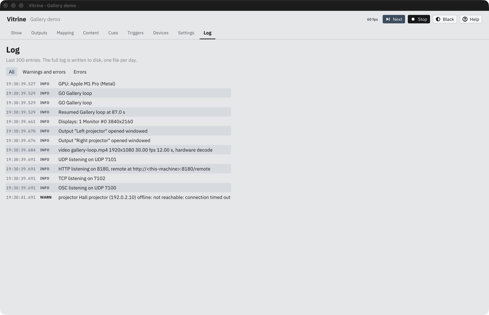
12
Filter: All, Warnings and errors, or Errors.
Warnings stand out in bold. Here the made-up projector address cannot be reached.
The page shows the last 300 entries. The full log is on disk, one file per day, in ~/Library/Application Support/Vitrine/logs/. Every problem that needs attention, such as a missing file, a display that disappeared or a projector that stopped answering, goes to the log and to the Health card on the Show page.
13Remote and HTTP API
A phone or tablet as the remote, and control from other systems.
Phone remote
Open http://<show-machine>:8080/remote on any phone or tablet on the same network. Devices shows the full address with the token; copy it, or make it a home-screen bookmark. The remote has Go for each cue, Next, Stop and Blackout, and shows what is playing.
HTTP API
All /api calls need the token when one is set, as ?token=… or an Authorization: Bearer … header. A successful call answers {"ok":true}.
Call
Does
/api/status
Current cue, frame rate, each output's state and any warnings, as JSON.
/api/go/<cue>
Go to a cue by name, number or id.
/api/next
Next cue.
/api/stop
Stop.
/api/blackout
Fade to black.
/api/unblackout
Restore from black.
/api/trigger/<name>
Fire HTTP-call triggers with that name. Add arguments with ?args=a,b or as a comma-separated request body.
/health
No token needed. Answers 200 while the render loop runs, 503 if it has stalled.
Black out, or restore with 0. No argument means black out.
/vitrine/unblackout
Restore from black.
14Recovery and safe mode
For a machine that runs on its own, day after day.
An unattended machine needs three things, and all three are needed: the computer powers on by itself after a power cut, it logs in by itself, and Vitrine starts at login and is relaunched if it stops.
Start at loginSettings, Operation, Start Vitrine at login and restart it if it stops. Supervision starts at the next login; from then on, after a crash or force-quit, macOS starts Vitrine again within a few seconds. The note under the checkbox says which state it is in. Quit or a normal shutdown closes it cleanly, and it stays closed until the next login.
Automatic loginSystem Settings, Users & Groups, Automatically log in as. FileVault blocks this: with FileVault on, the Mac stops at the password screen after a reboot. Check with fdesetup status. Also set the lock screen to never ask for a password and the screen saver to never.
Power back onsudo pmset -a autorestart 1, or on a Mac mini or Mac Studio, "Start up automatically after a power failure" in System Settings, Energy.
What comes back after a restart
The mapping, warp, blends, masks, colour and cues are in the show file, and saves are atomic, so a crash never leaves a half-written show.
The cue that was playing comes back with its clock counting the downtime, and so does a blackout. Looping videos pick up where they would have been, so outputs stay in step. If you pressed Stop before the restart, the startup cue plays instead.
If the graphics driver resets, Vitrine rebuilds its GPU state in place without restarting. Display sleep and wake leave the outputs open.
If the render loop freezes for 10 seconds, Vitrine exits so it can be relaunched.
Daily restart. Settings, Operation, Restart daily at takes a 24 hour time such as 04:30. At that time Vitrine saves, quits cleanly and starts again, which clears memory that graphics drivers and decoders leak over weeks of running. Outputs go black for a few seconds, then the cue that was playing resumes. It does not count as a crash, it is skipped in safe mode, and it waits for an open file dialog to close. Pick a time when the space is closed.
Safe mode
If Vitrine stops uncleanly 3 times within 10 minutes, the next launch starts in safe mode: outputs open as windows, the startup cue does not play, and commands from the network (OSC, UDP, TCP, HTTP, Art-Net) are ignored. /health and /api/status still answer, and the Health card says why. The usual cause is a bad media file or a missing display. Fix it, then quit and open Vitrine again; a clean start resets the count.
To start in safe mode on purpose (it also starts blacked out):
Other start options: --show <file> opens a given show, and --edit skips the edit PIN.
15Keyboard
Shortcuts in the control window.
Keys
Does
CmdS
Save now.
CmdZ
Undo.
CmdShiftZ or CmdY
Redo.
Arrow keys
Move the selected warp or mask point by 0.1% of the slice.
Shift + arrows
Move it by 1%.
Shift + drag
Move a point at a tenth of the pointer speed.
Esc
Deselect the point on Mapping.
CtrlEsc
Stop.
CtrlSpace (Mac: OptionSpace)
Next cue.
AltUp / Down
On Cues, select the previous or next cue.
Alt0 to 6
On Show, pick a test pattern (0 is off).
Double-click a number
Reset it to its default (blend width, gamma, crop, brightness, speed and similar).
Ctrl/Cmd + click, Shift + click
On Cues, add a cue to a group, or select a range. Then set one colour or delete the group.
Any other key
Goes to Key press triggers, from the control window or an output window. Nothing is bound by default, so add a trigger (for example space to Next cue) if the operator wants one.
16Troubleshooting
Check the Health card and the log first. Most answers are there.
A projector shows nothing
Outputs page: is the output enabled, and is it on the right display? Displays matched by position change if cables are swapped; match by name instead.
Is Black on? While blacked out, the top-bar button reads Restore.
Does the cue give that layer media and an opacity above zero?
Turn on Projector colours. If the colour shows, the output works and the problem is in the content or the cue.
The overlap is brighter or darker than the rest
Check that both sides have the same blend width, which should match the real overlap. Then adjust blend gamma with Blend check on. In a dark scene, set black lift with the Black pattern.
A video does not play
Content shows whether the file could be read. If a file moved, the media pickers show missing: and the name, and the log says which file. Keep media inside the show's folder so paths stay relative. Very large files (above 4K, or high-bit-rate ProRes 4444 at 4K and up) may need re-encoding to HEVC or a lighter ProRes flavour.
Video stutters or shows wrong colours
On a Mac, video is handed to the graphics chip without copying. If one particular file stutters or looks wrong, start Vitrine from Terminal with VITRINE_NO_ZERO_COPY=1 /Applications/Vitrine.app/Contents/MacOS/vitrine to use the slower copying path, and tell whoever supports your show which file it was. HDR files on an SDR projector look flatter than on an HDR screen; that is the tone mapping described under Content.
OSC, UDP or HTTP commands are ignored
Devices, Control ports: is the port listening? Another program may hold it; the log says so.
Is Vitrine in safe mode? It ignores network commands then.
HTTP returns 401 token required: add ?token=.
The macOS firewall may block incoming connections. Allow Vitrine in System Settings, Network, Firewall.
For UDP and TCP, the text must match exactly, including case, unless you use a /regex/i pattern.
The pages are locked
An edit PIN is set. Enter it from the lock screen, or start Vitrine with --edit.
Vitrine keeps starting in safe mode
It crashed three times in ten minutes. Read the log for the cause, fix it, quit and reopen. To clear the count by hand, delete ~/Library/Application Support/Vitrine/crashes.json.